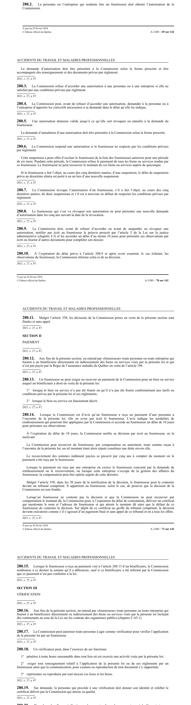

art-280.2-LATMP : autorisation obligatoire du fournisseur
Personne ne peut agir comme fournisseur de biens ou de services auprès d'un bénéficiaire sans avoir d'abord obtenu l'autorisation de la CNESST. La démarche vise la personne ou l'entreprise candidate.
- L'autorisation préalable de la CNESST conditionne l'accès même au statut de fournisseur : elle n'est pas une simple formalité d'inscription.
- La demande se dépose auprès de la CNESST dans la forme qu'elle prescrit, accompagnée des renseignements et des documents exigés par règlement.
- Le contenu exact de ce dossier est fixé par règlement de la CNESST, en vertu de art. 454.1 par. 2, et peut varier selon le type de biens, de services ou de demandeur.
- La suite du parcours : refus faute de satisfaire aux conditions réglementaires (art. 280.3), possibilité de correctifs avant refus (art. 280.4).
🌐 LegisQuébec · 📄 PDF officiel (page 69)
Texte officiel
La personne ou l’entreprise qui souhaite être un fournisseur doit obtenir l’autorisation de la Commission.
La demande d’autorisation doit être présentée à la Commission selon la forme prescrite et être accompagnée des renseignements et des documents prévus par règlement.
Texte de l’article 280.2 LATMP, extrait de la couche texte du PDF officiel (page 69), sans OCR ni retouche. La capture ci-dessous et le PDF font foi.
{kind=link}

Toucher l'image pour l'agrandir🔗 Ouvrir a cette page : LATMP.pdf : page 69 · texte a jour au 20 février 2024
📚 Source légale : 2021, c. 27, a. 87. · LégisQuébec
Voir aussi
- art. 280.1 · définition : aux fins de la présente section, on entend par «fournisseur» toute personne ou toute entreprise qui fourit a un bénéficiaire directement ou indirectement des biens ou services visés 4 la présente loi.
- art. 280.3 · la CNESST refuse d'accorder une autorisation à une personne ou à une entreprise si celle-ci ne satisfait pas aux conditions prévues par règlement.
- art. 280.4 · faculté : avant de refuser d'accorder une autorisation, la CNESST peut demander à la personne ou à l'entreprise d'apporter les correctifs nécessaires à sa demande, dans le délai qu'elle indique.
- ↑ Loi : LATMP
Pages qui pointent ici (5)
- art-110-LMRSST : insère l'art. 454.1 LATMP Recueil législatif
- art-280-LATMP : employeur inscrit registre accidents Recueil législatif
- art-280.3-LATMP : refus d'autorisation Recueil législatif
- art-280.8-LATMP : interdiction de nouvelle demande après révocation Recueil législatif
- art-454.1-LATMP : règlements obligatoires de la CNESST Recueil législatif